購物筆記 · 來自 Obsidian
6天美食漫遊｜胡志明市區吃喝全集
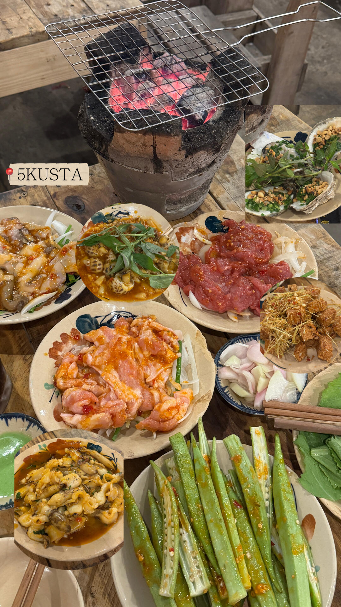
6 天泡在胡志明，沒有趕行程，一頭扎進這座城市的煙火裡，把本地美食挨個打卡，從街邊小攤到特色餐廳。
超火的本地夜宵大排檔，傳統炭爐烤肉，新鮮醃好的牛肉、海鮮、秋葵，食材豐富，圍爐烤肉氛圍感拉滿，人均 130 吃到撐。
> ⚠️ vault 已有「日式炭火燒肉｜5KU Station」，可能為同一家
逛累了來這裡歇腳的復古下午茶小店。必點越南特色雞蛋咖啡（綿密蛋香奶蓋＋醇厚黑咖啡），配鋪滿鮮芒果的奇亞籽芒果吐司，安靜治癒，拍照很出片。
> ⚠️ vault 已有「蛋咖啡早餐｜Little Hà Nội」
市場裡的寶藏榴槤椰汁，滿滿一大杯，一整塊榴槤肉搭配多層小料，椰香濃郁，甜度剛剛好，一杯才 14 元，逛市場必喝！
本地人扎堆的蟹肉粗粉老店。濃稠鮮美的蟹湯底，Q 彈寬厚粗米粉，大蝦、鵪鶉蛋、豬血鋪滿整碗，一定要加油條泡進湯汁，鮮到上頭。
> ⚠️ 注意與 vault 已有的「蟹肉粉｜Bánh Canh Cua 87」是不同店（67 vs 87）
來胡志明每天都想嗦一碗！滾燙石鍋鎖住牛肉鮮嫩，薄切牛肉在熱湯裡燙熟，湯底清甜，配香菜小蔥，一口治癒。
氛圍感滿滿的特色蟹黃火鍋，濃郁蟹湯鍋底，搭配生蠔、各類時蔬米粉，風味層次豐富。
> ⚠️ vault 已有 Nhà Tú
本地人深夜食堂，砂鍋蛙肉鮮嫩，搭配綿白粥，人均僅 15 元，晚上才營業。
第一郡老牌燒烤攤，烤蝦、烤血蚶，還有超驚艷的牛肉花菜炒泡麵，味道很特別（直接點了兩份）。
精緻越南私房菜：生燙牛肉河粉、炭烤豬頸肉、炸春捲、砂鍋燜魷魚，地道越南家常菜，味道在線。
胡志明街邊寶藏錫紙蟹，黑胡椒、黃油蒜香兩個風味，膏蟹肉蟹任選，濃郁醬汁裹滿蟹肉。
隨處可見，煙火氣十足。
---
💭 心得：胡志明的美味藏在大街小巷，不用匆忙趕路，慢慢吃慢慢感受，這就是屬於西貢的浪漫。
📸 實拍（共 18 張）
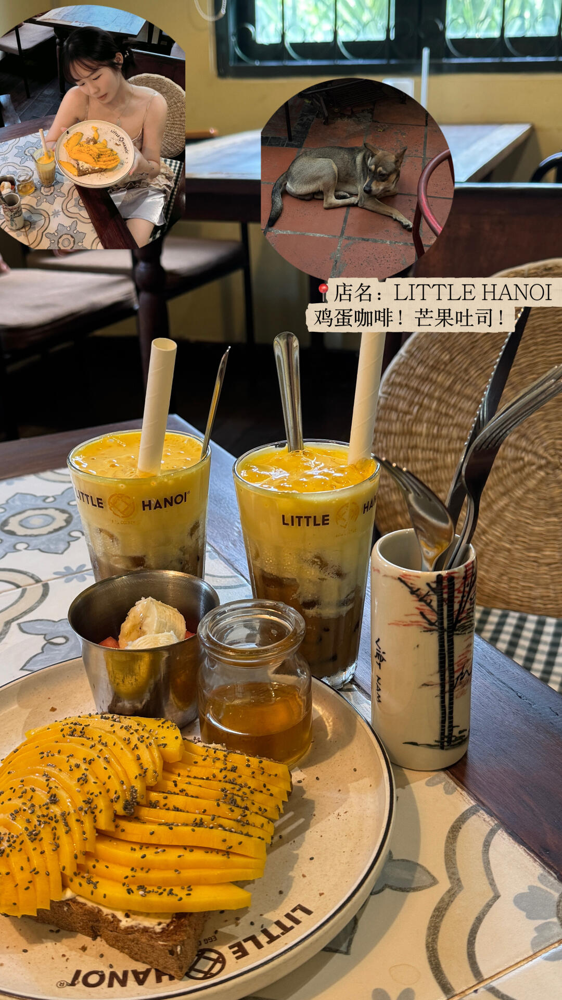
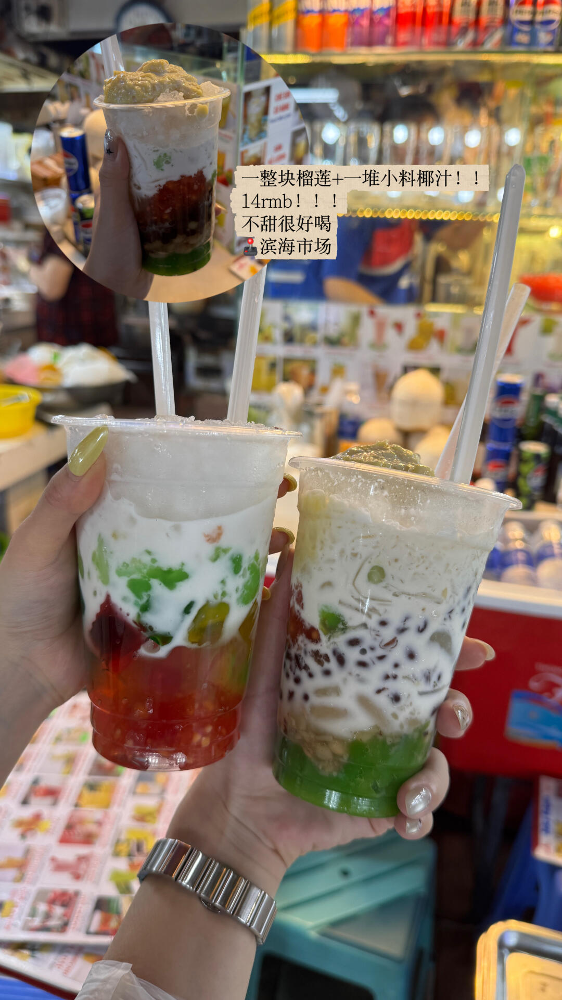
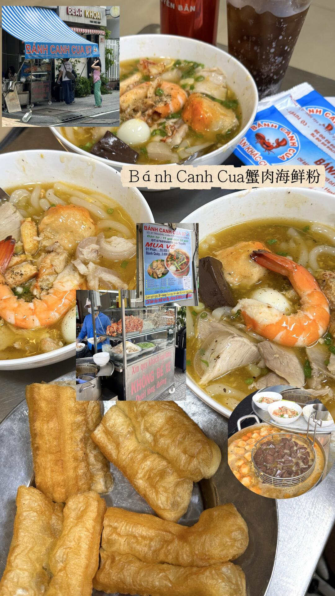
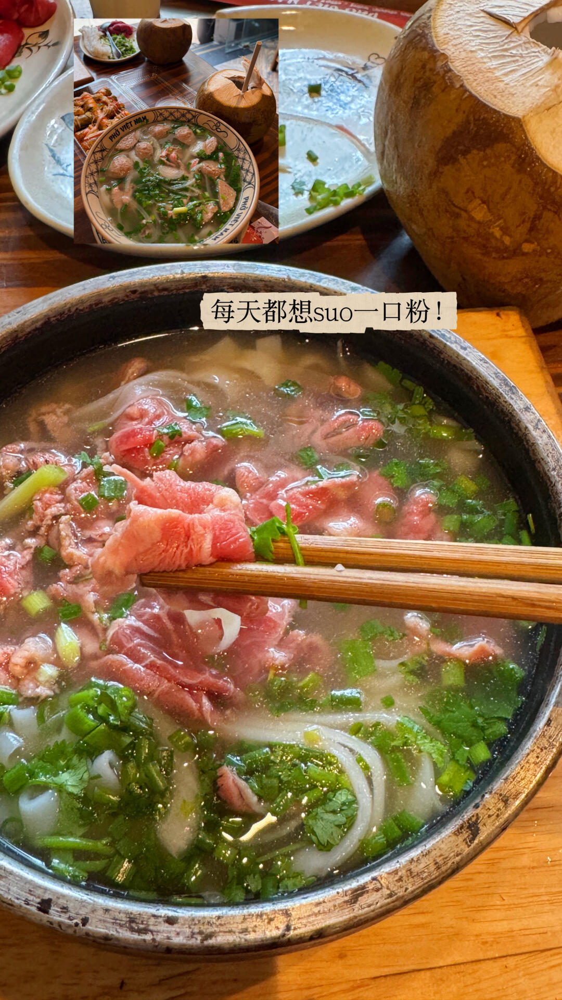
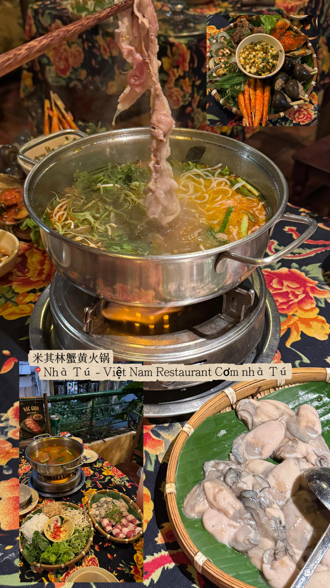
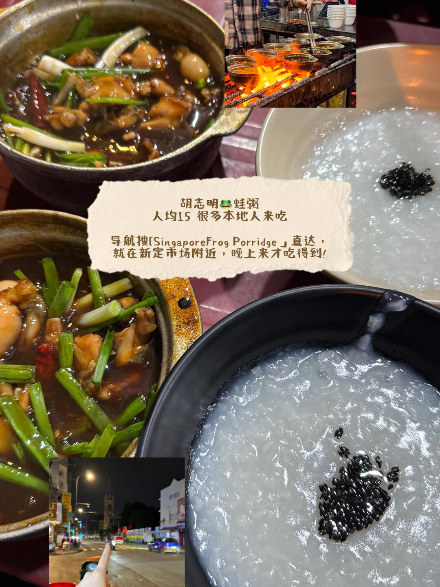
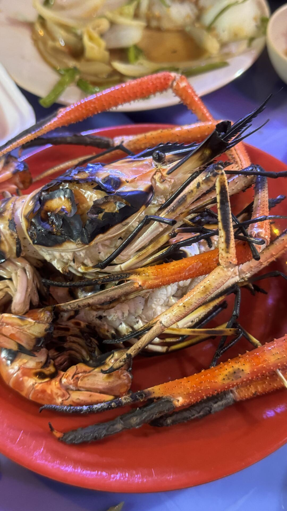
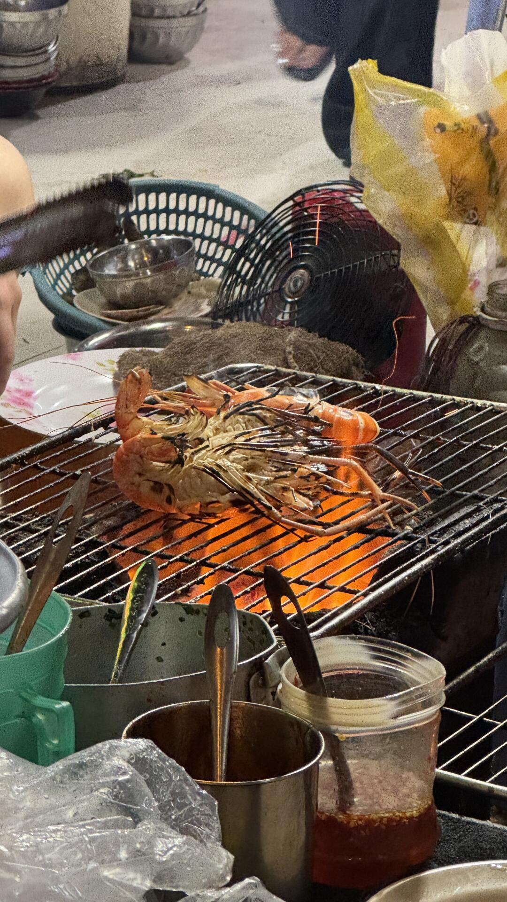
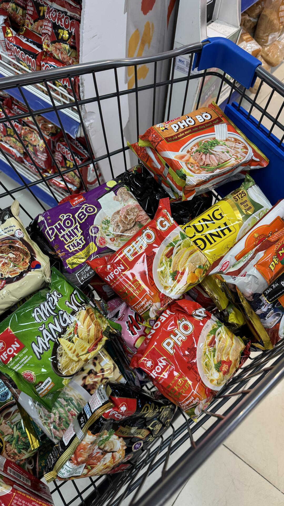
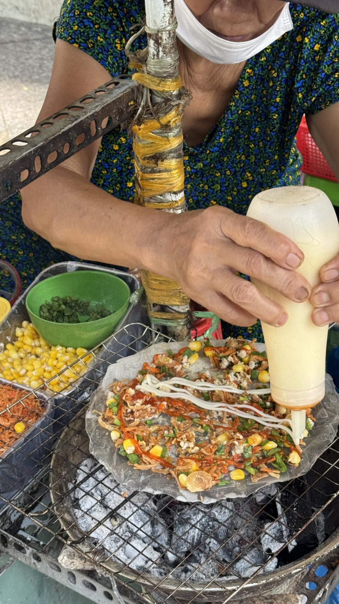
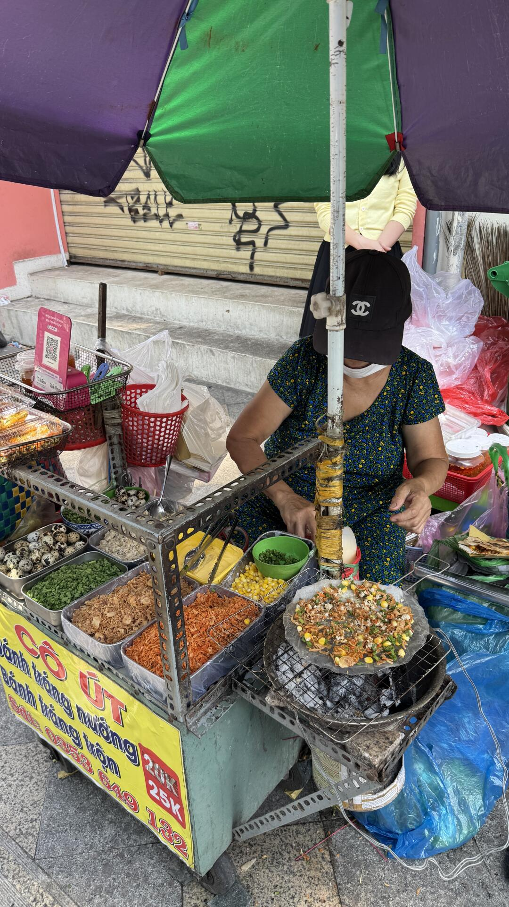
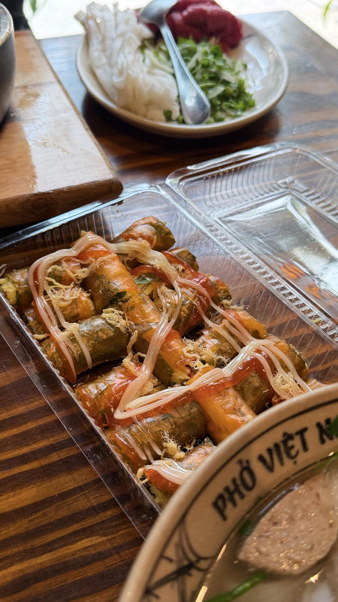
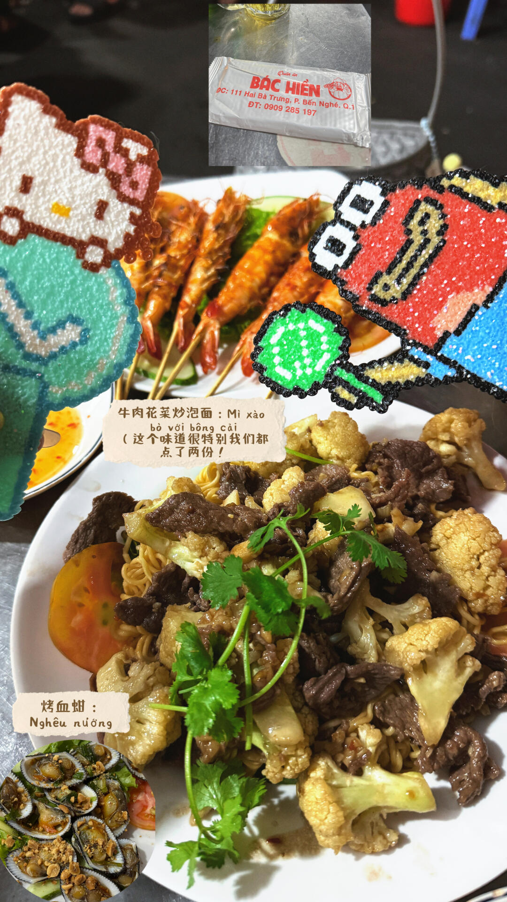
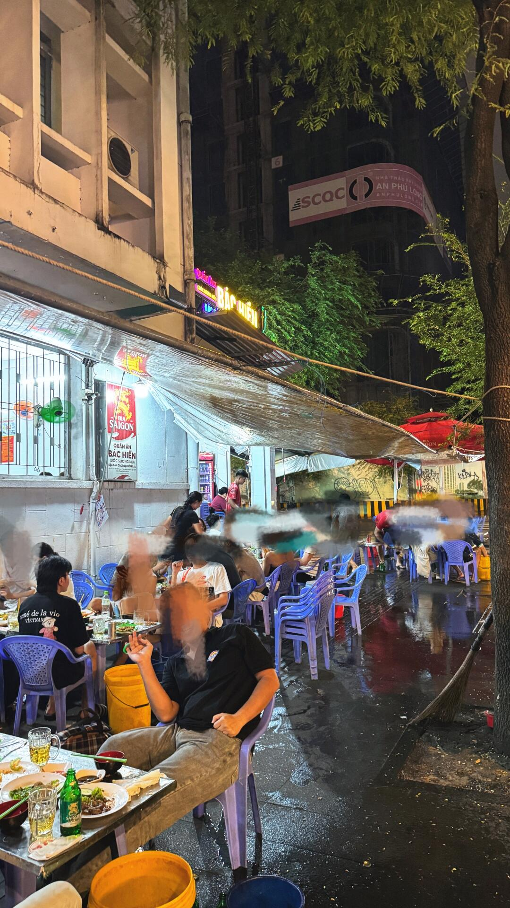
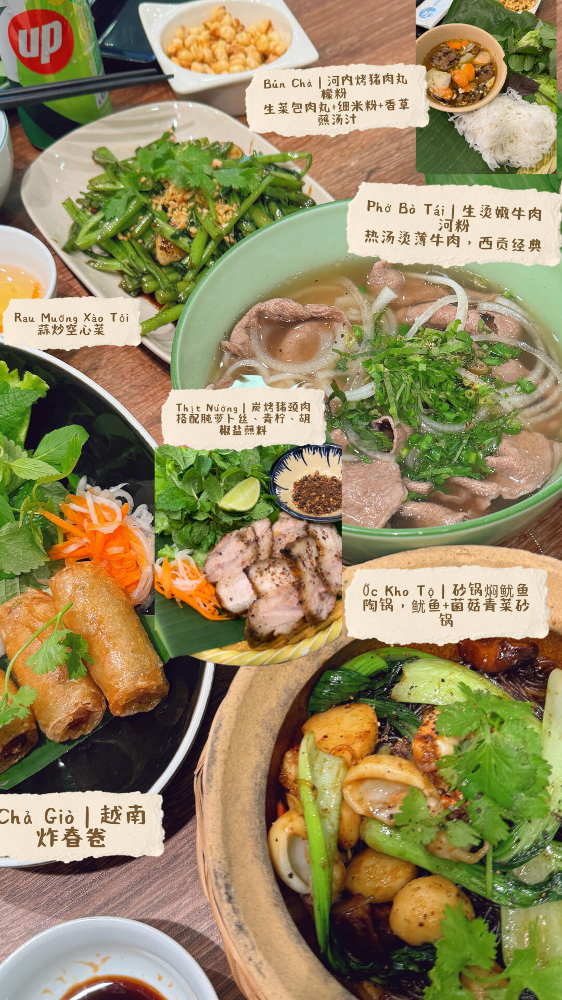
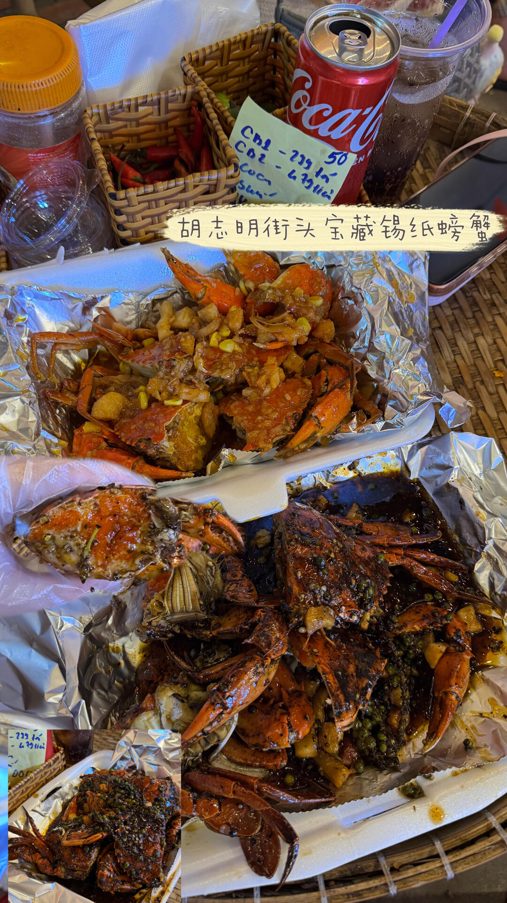
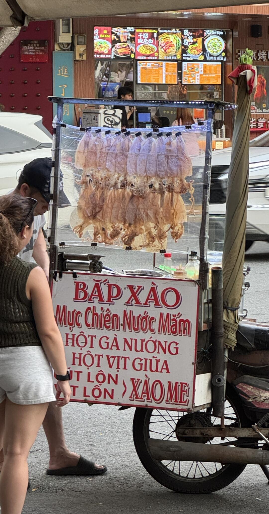